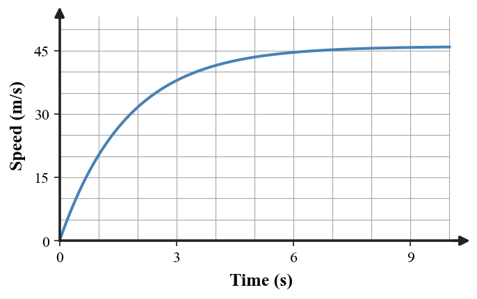

Explanation A: “As a skydiver speeds up, air resistance grows. The downward net force gets smaller until air resistance equals weight, so acceleration becomes zero while the skydiver continues downward at constant speed.”
Explanation B: “The skydiver reaches terminal speed because gravity becomes weaker and eventually stops.”
Defend the better explanation. Critique the weaker one using force, acceleration, and motion evidence.
A: “The net force decreases as air resistance grows.”
B: “The net force stays equal to weight the whole time.”
Choose and defend the better model. Explain how the force balance changes through the three stages.
Use the force models.
Two students disagree: one says acceleration is the same in all three panels; the other says acceleration decreases toward zero. Decide which fits the evidence and defend the conclusion.
A: “At terminal speed, the skydiver is motionless because the forces balance.”
B: “Balanced forces mean constant velocity, not necessarily zero velocity.”
Defend the better explanation using Newton’s ideas and a force model in words.
The graph shows the speed of a falling object.
A: “The plateau occurs because upward air resistance grows until the net force becomes zero.”
B: “The plateau occurs because the downward force fades to zero.”
Evaluate both explanations and defend the one consistent with the graph and force model.
A falling object’s speed follows this pattern.

One model predicts a constant downward net force throughout; another predicts a decreasing downward net force that reaches zero. Select the better model and connect at least two features of the graph to acceleration and force.
A: “The upward net force means the person instantly moves upward.”
B: “The person is still moving downward at first but accelerates upward, so downward speed decreases.”
Defend the better explanation and trace the likely force/motion sequence until a new lower terminal speed is reached.
Two equal-weight parachutes have different surface areas. A student claims the smaller parachute must reach terminal speed sooner because “less air hits it.”
Critique the claim and build a qualitative model for how surface area affects air resistance, net force, acceleration, and the eventual terminal speed.